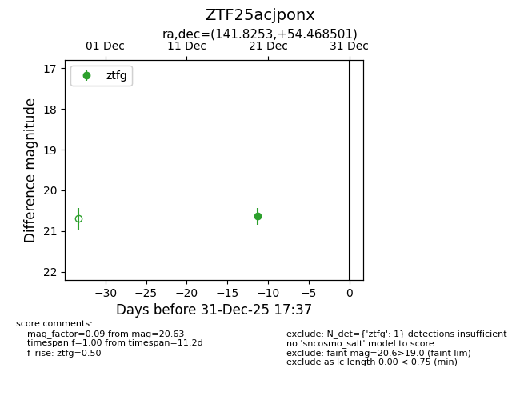
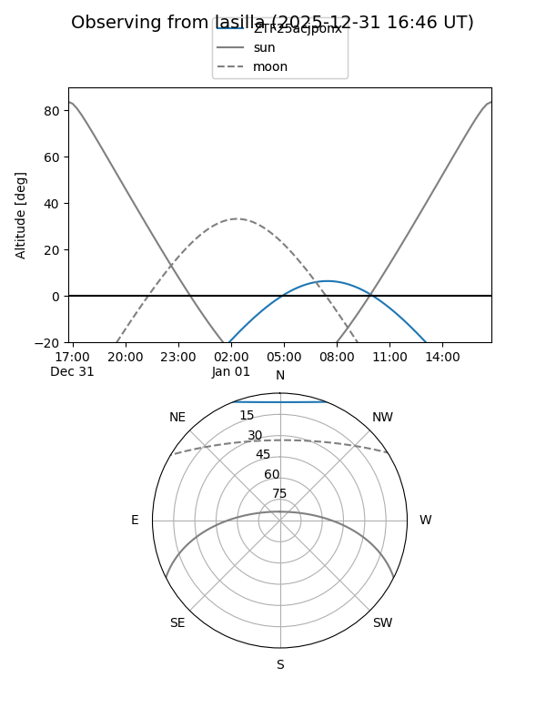
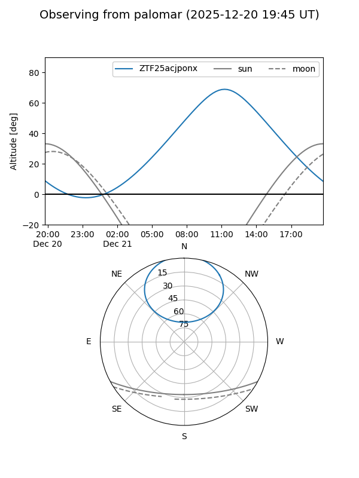
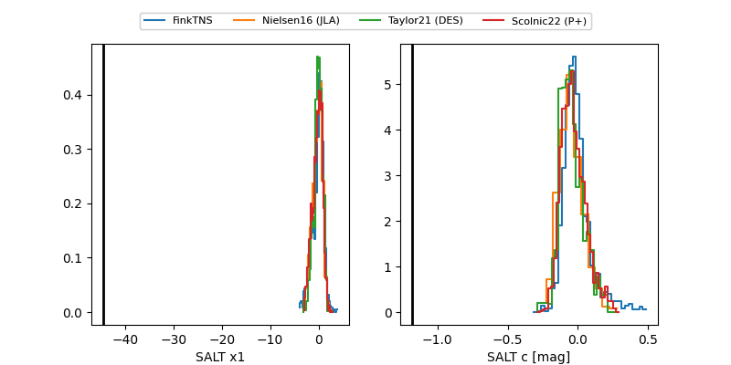

ZTF25acjponx
Target ZTF25acjponx at 2025-12-22 14:11
Aliases and brokers:
FINK: fink-portal.org/ZTF25acjponx
Lasair: lasair-ztf.lsst.ac.uk/objects/ZTF25acjponx
ALeRCE: alerce.online/object/ZTF25acjponx
alt names
ZTF25acjponx (ztf,fink_ztf)
Coordinates:
equatorial (ra, dec) = 141.8253,+54.46850
equatorial (HMS+DMS) = 09:27:18.07,+54:28:06.60
galactic (l, b) = (161.9506,+44.13356)
Flags:
Photometry:
last ztfg=20.63
1 ztfg detections
Lightcurve

Visibility


Additional plots
